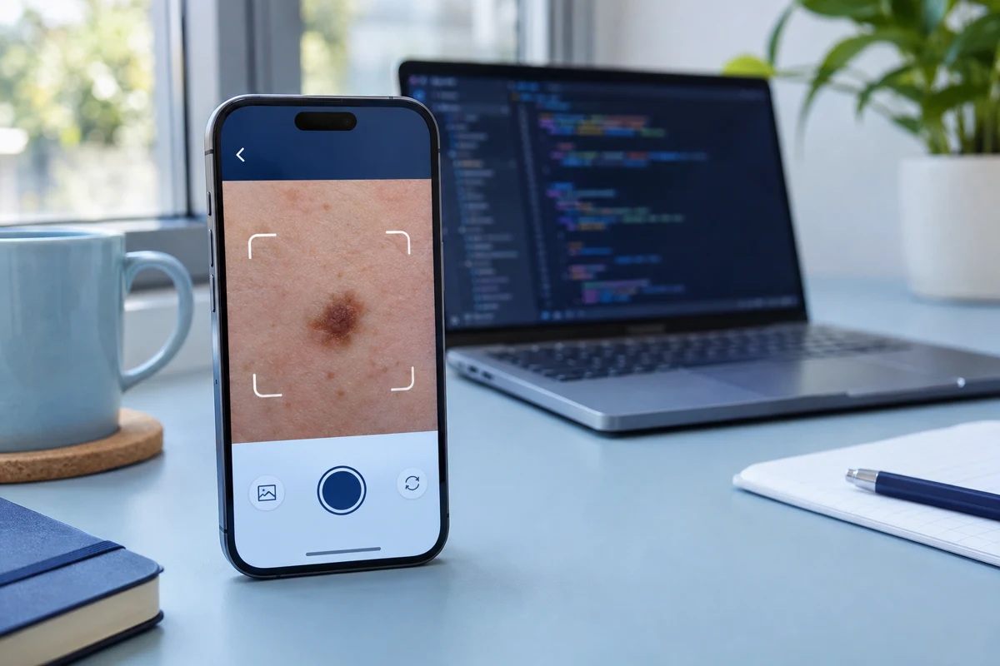
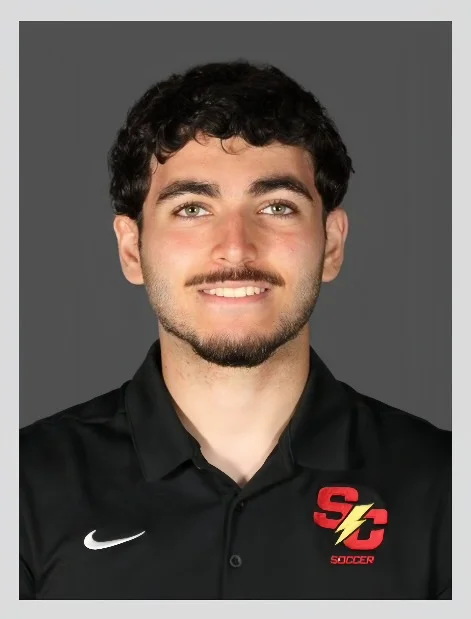
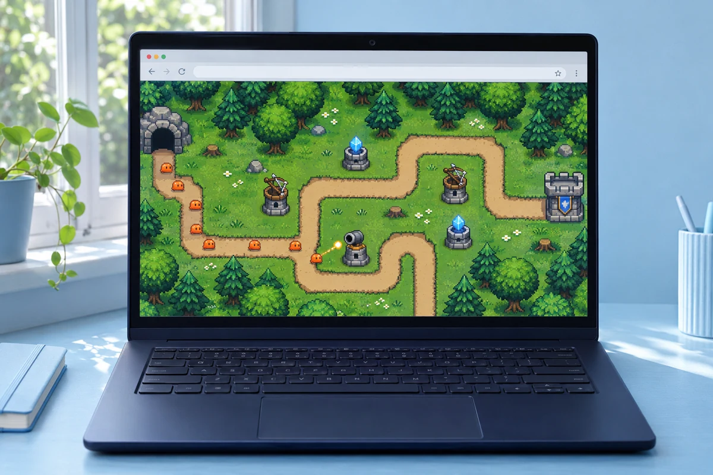
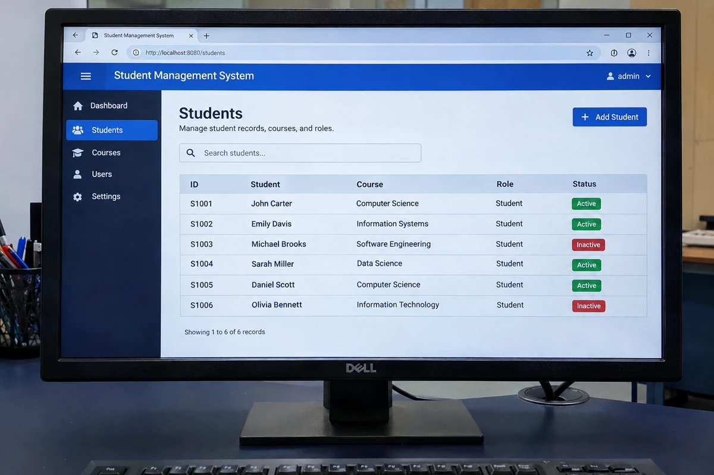
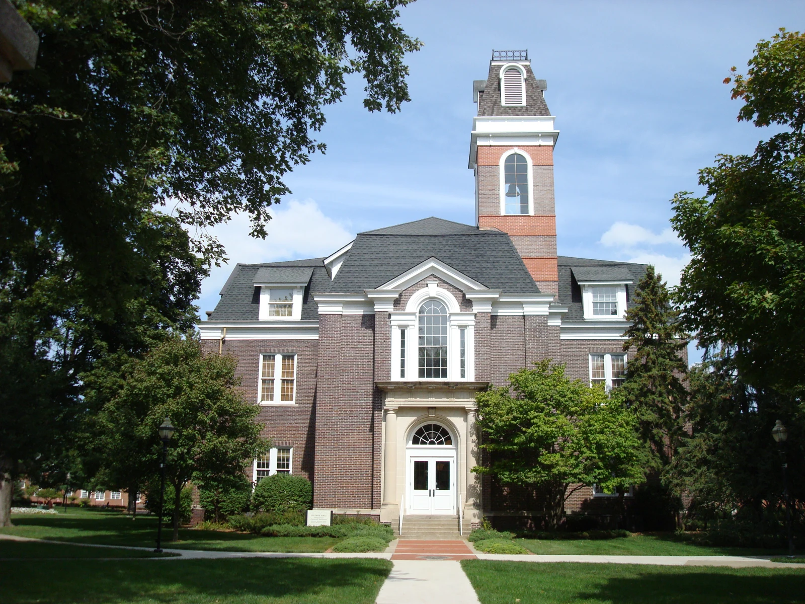
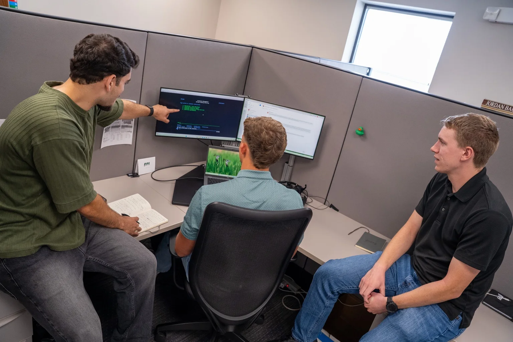
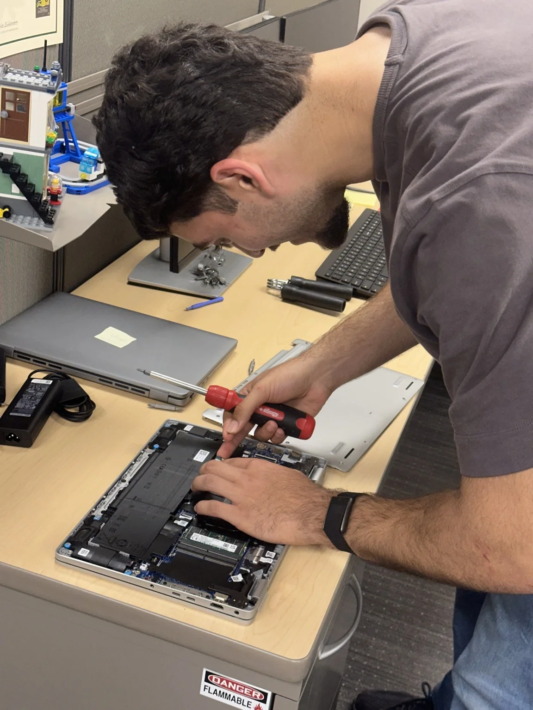
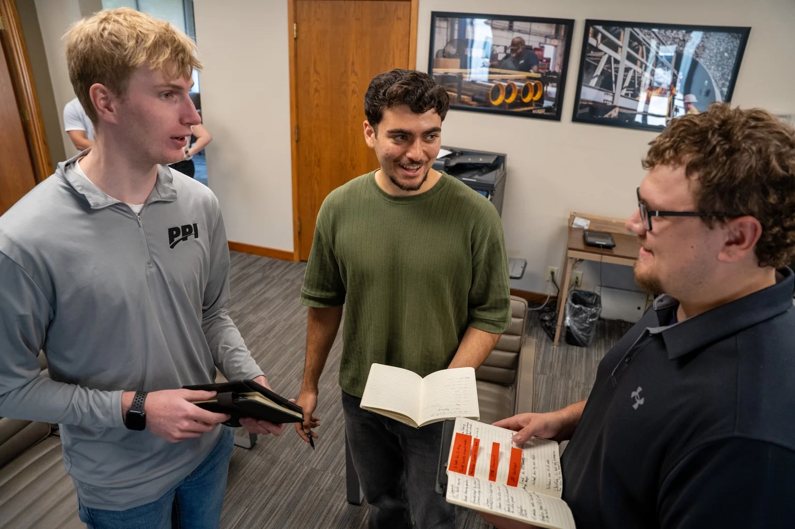
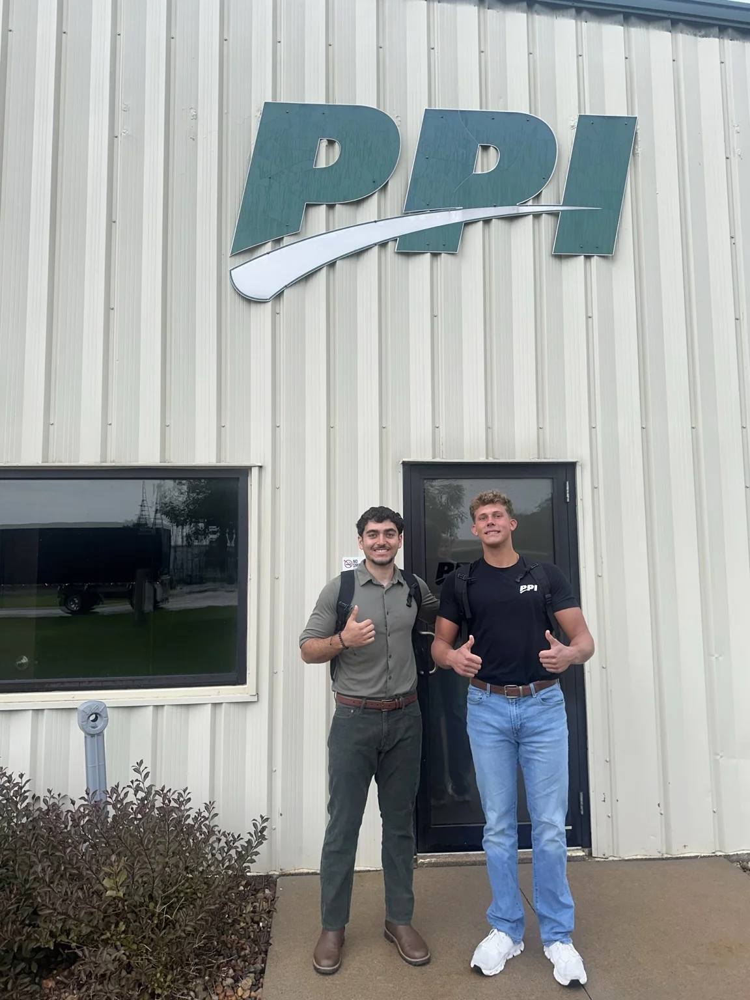

Skin Cancer Diagnosis Using AI
An academic image classification project connecting AI models with a mobile image upload workflow and AWS deployment.
I’m Omar Amer, a Computer Science & CIS student building software and solving everyday IT problems.

Software projects and class work across AI, backend development, games, and the web.

An academic image classification project connecting AI models with a mobile image upload workflow and AWS deployment.

A browser tower defense game with hostile entities and defensive towers, built with web technologies and a collaborative workflow.

A backend application with role-based access for students, instructors, and teaching assistants, backed by a relational database.

SIMPSON COLLEGE / WEB COURSEWORKA three-page personal website connecting an about page, interests, and campus life, alongside coursework in responsive tables and forms.
A look at my IT experience, from working on devices to sharing ideas with colleagues.



From supporting employees to developing interfaces, I enjoy connecting technical work with the people who use it.
Read my full résumé ↗Support employees through Freshservice, troubleshoot devices and networks, and build internal pages about AI tools and policies. Work with SQL queries, device imaging, Active Directory, and PDQ.
Worked on a project preparing 2,000+ Dell laptops for the Windows 10 to Windows 11 transition through imaging, configuration, updates, and troubleshooting.
Built responsive dashboards and interfaces with React and web technologies. Collaborated on REST API integrations and tested features across screen sizes.
Computer Science & Computer Information Systems
Minor in Data Analytics · Expected May 2027
My coursework connects software development, artificial intelligence, cybersecurity, and web development with projects I can build and explain.
Explore my class projects ↗I’m studying Computer Science and Computer Information Systems at Simpson College, with a minor in Data Analytics. My experience spans IT support, software development, and academic AI projects.
Outside technology, soccer is a big part of my life. I bring the same commitment to learning, teamwork, and showing up for the people around me.

Python · Java · JavaScript · HTML · CSS · SQL · React · Spring Boot
GitHub · GitLab · AWS · Active Directory · PDQ · Freshservice
Completed courses and certificates, alongside the credential I’m pursuing next.
Course completed with Honors
CompletedProfessional Certificate
CompletedComputer science foundations
Completed courseworkFront-end web development foundations
Completed courseworkPreparing for the certification exam
In progressI’m interested in 2027 opportunities in IT, software development, and data analytics.
amer81132@gmail.com